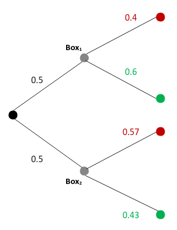
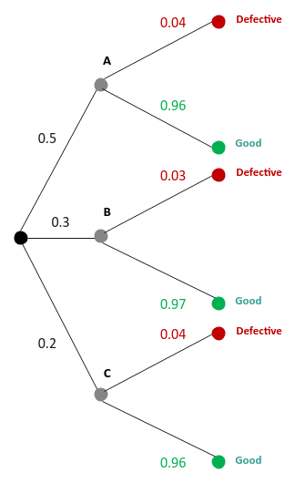
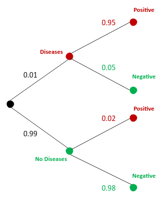

| PolarSPARC |
Introduction to Bayes Theorem
| Bhaskar S | 06/05/2022 |
Bayes Theorem
In the article, Introduction to Probability, we covered the fundamentals of probability, including the concept of Conditional Probability.
Bayes Theorem (as referred to as the Bayes Rule) is a way of computing the conditional probability, given the observation of a new event. In other words, it is the process of updating the prior hypothesis (belief) when confronted with new evidence (data).
Bayes Rule is defined using the following equation:
$P(H \mid E) = \Large{\frac{P(E \mid H) . P(H)}{P(E)}}$
where:
$\boldsymbol{H}$ is the hypothesis
$\boldsymbol{E}$ is the evidence
$\boldsymbol{P(H)}$ is the prior probability of the hypothesis
$\boldsymbol{P(E)}$ is the prior probability of the evidence
$\boldsymbol{P(E \mid H)}$ is the probability (or likelihood) of the evidence given the hypothesis
$\boldsymbol{P(H \mid E)}$ is the posterior probability of the hypothesis given the evidence
Proof of Bayes Theorem
From the principles of conditional probability, we know the probability for the two dependent events $H$ and $E$ to occur together is defined as follows:
$P(H \cap E) = P(H) . P(E \mid H)$ $\color{red} ..... (1)$
Similarly,the probability for the two dependent events $E$ and $H$ to occur together is defined as follows:
$P(E \cap H) = P(E) . P(H \mid E)$ $\color{red} ..... (2)$
We know that the probability of ($H$ and $E$) is the same as the probability of ($E$ and $H$). This implies the equations $\color{red} (1)$ and $\color{red} (2)$ must be equal.
That is:
$P(H) . P(E \mid H) = P(E) . P(H \mid E)$
Re-arranging the terms, we get:
$P(H \mid E) = \bbox[pink,2pt]{\Large{\frac{P(E \mid H) . P(H)}{P(E)}}}$
Solved Problems
Let us look at an example to get an understanding of the Bayes Theorem.
| Example-1 | There are two boxes with some colored balls in each. The first box contains 4 red and 6 green balls. The second box contains 4 red and 3 green balls. One box is picked at random and one ball from that box is drawn at random and it turns out to be a green ball. Find the probability that the green ball was drawn from the first box |
|---|---|
|
The following illustration shows the tree diagram of the probability outcomes: 
Fig.1
We are interested in the probability of picking the first box given it is a green ball - $P(B_1 \mid G)$ From Bayes Rules, we know: $P(B_1 \mid G) = \Large{\frac{P(G \mid B_1) . P(B_1)}{P(G)}}$ From the probability outcomes from above, we can infer the following: $P(G \mid B_1) = 0.6$ $P(B_1) = 0.5$ $P(G) = P(B_1) . P(G \mid B_1) + P(B_2) . P(G \mid B_2) = (0.5)(0.6) + (0.5)(0.43) = 0.52$ Therefore $P(B_1 \mid G) = \Large{\frac{(0.6)(0.5)}{0.52}}$ $= 0.57$ |
|
Let us look at another example to get a better understanding of the Bayes Rule.
| Example-2 | There are 3 companies A, B, and C that manufacture dryers. Company A makes 60% of the dryers, company B A makes 30% of the dryers, and company C makes the remaining 20% of the dryers respectively. The dryers made by company A have a defect rate of 4%, company B has a defect rate of 3% , and company C has a defect rate of 4% respectively. If a dryer is selected randomly and found to be defective, find the probability it was manufactured by company B |
|---|---|
|
The following illustration shows the tree diagram of the probability outcomes: 
Fig.2
We are interested in the probability that the dryer is made by company B given it is defective - $P(C_A \mid D)$ From Bayes Rules, we know: $P(C_A \mid D) = \Large{\frac{P(D \mid C_A) . P(C_A)}{P(D)}}$ From the probability outcomes from above, we can infer the following: $P(D \mid C_A) = 0.04$ $P(C_A) = 0.5$ $P(D) = P(C_A) . P(D \mid C_A) + P(C_B) . P(D \mid C_B) + P(C_C) . P(D \mid C_C) = (0.5)(0.04) + (0.3)(0.03) + (0.2)(0.04) = 0.037$ Therefore $P(C_A \mid D) = \Large{\frac{(0.04)(0.5)}{0.037}}$ $= 0.54$ |
|
Let us look at one final example to firm our understanding of the Bayes Theorem.
| Example-3 | There is a rare diseases that effects 1% of a population. A certain lab test can detect this rare disease. The lab test is positive for 95% of the people with the rare disease and positive in 2% of the people without the rare disease. If a person, selected at random from this population has tested positive, what is the probability that the selected person has the rare disease |
|---|---|
|
The following illustration shows the tree diagram of the probability outcomes: 
Fig.3
We are interested in the probability that the person selected from the population who tested positive has the rare disease - $P(D \mid +)$ From Bayes Rules, we know: $P(D \mid +) = \Large{\frac{P(+ \mid D) . P(D)}{P(+)}}$ From the probability outcomes from above, we can infer the following: $P(+ \mid D) = 0.95$ $P(D) = 0.01$ $P(+) = P(D) . P(+ \mid D) + P(\bar{D}) . P(+ \mid \bar{D}) = (0.01)(0.95) + (0.99)(0.02) = 0.03$ Therefore $P(D \mid +) = \Large{\frac{(0.95)(0.01)}{0.03}}$ $= 0.32$ |
|
Generic Bayes Rule
From the 3 examples above, notice that the denominator was the aggregate of all the options (the two boxes from the first example and the three companies from the second example) involved in the problem.
With that intuition, one could re-write the Bayes Rule in a generic way as follows:
$P(H \mid E) = \Large{\frac{P(E \mid H) . P(H)}{P(E)}}$
where:
$\boldsymbol{P(E)} = \sum_{i=1}^n P(E_i) . P(H \mid E_i)$
with $n$ entities
Therefore,
$P(H \mid E) = \bbox[pink,2pt]{\Large{\frac{P(E \mid H) . P(H)}{\sum_{i=1}^n P(E_i) . P(H \mid E_i)}}}$
References